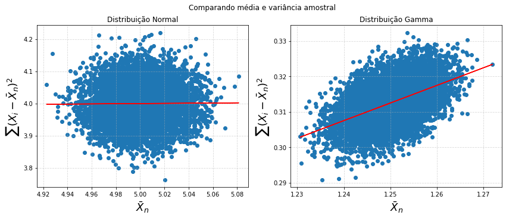

Distribuição Chi-Quadrado
Para cada positivo, a distribuição é chamada de distribuição . Ela foi primeiramente descrita por Helmert para computar a distribuição amostral de uma população normal. Vamos ver como a normal se relaciona mais a frente.
Propriedades
Se , então:
Soma de
Se são independentes e cada uma tem grau de liberdade , então tem distribuição
Relação com a Normal
Se tem distribuição normal padrão,
De fato, se juntarmos as últimos dois teoremas, veremos que a soma de quadrados de normais independentes e identicamente distribuidas será , onde é o número de parcelas.
Implementação
import numpy as np
import matplotlib.pyplot as plt
from scipy.stats import chi2
from matplotlib import animation, cm
from IPython.display import HTML
# Random Object
ro = np.random.default_rng(1000) # Para assegurar reprodutibilidade
degree_freedom = 10
mean, var, skew, kurt = chi2.stats(degree_freedom, moments = 'mvsk')
print('Propriedades')
print('Média: {}'.format(mean))
print('Var: {}'.format(var))
print('Assimetria: {}'.format(skew))
print('Curtose: {}'.format(kurt))
Propriedades
Média: 10.0
Var: 20.0
Assimetria: 0.8944271909999159
Curtose: 1.2
fig, ax = plt.subplots(1, 1)
x = np.linspace(chi2.ppf(0.01, degree_freedom),
chi2.ppf(0.99, degree_freedom), 100)
ax.plot(x, chi2.pdf(x, degree_freedom), 'r-', lw=5, alpha=0.6, label='chi2 pdf')
r = chi2.rvs(degree_freedom, size = 10000)
ax.hist(r, density = True, alpha = 0.2)
ax.legend()
plt.show()

fig, ax = plt.subplots()
line, = ax.plot(x, chi2.pdf(x, degree_freedom), 'r-', lw=5, alpha=0.6)
ax.set_xlim((0,150))
ax.set_title('Chi-Square')
def animate(i, degree_freedom):
x = np.linspace(0, chi2.ppf(0.99, degree_freedom + i), 100)
line.set_data(x, chi2.pdf(x, degree_freedom + i))
return line,
anim = animation.FuncAnimation(fig, animate, frames = 100,
interval = 50, fargs=(degree_freedom,), repeat = False)
HTML(anim.to_html5_video())

Distribuição Conjunta da média e variância amostrais
formam uma amostra aleatória com distribuição normal e com média e variância desconhecidos. Estamos interessados na distribuição conjunta dos estimadores de máxima verossimilhança para média e variância da amostra.
Teorema de Basu
Sejam e a média e variância amostrais, respectivamente. Então tem distribuição normal com média e variância , enquanto tem a distribuição , isto é, com grau de liberdade. Além disso elas são independentes.
Esse teorema é um pouco mais complexo e, na verdade, essa seria uma espécie de aplicação do teorema, na verdade. O teorema de Basu diz que:
Se é uma estatística suficiente completa (Considere, nesse teorema, uma função integrável limitada) para e uma estatística ancillary, então é independente de . Nesse caso é completa suficiente e é ancillary, por que não depende de .
O mais interessante é que essa propriedade é só vista com a distribuição normal! Olhem a página 9.
Demonstração
O livro tem uma abordagem um pouco mais voltado à Álgebra Linear. Aqui vou mostrar uma ideia um pouco diferente, onde vocês podem demonstrar os passos, como exercício.
-
Passo 1:
- Dica: Escrever e abrir em três somatórios.
-
Passo 2:
- Dica: O Passo 1 é um caso especial do Passo 2. O processo é o mesmo.
-
Passo 3: é independente de .
- Dica: Montar a pdf conjunta de (já fizemos isso atraveś da verossimilhança) e fazer uma mudança de variável . Com essa mudança, é possível montar a pdf como função de . Esse processo é um pouco mais chato, mas é bom lembrar como fazez mudança de variável para pdfs. Aqui você pode conferir como. É importante lembrar que é uma função de após transformada e não de .
- Dica 2: Fatorizar a pdf conjunta. Você vai ver como se destaca a independência aqui.
-
Passo 4: Mostrar que e são independentes.
Referências
Simples visualização
Eu gostaria de comparar o que acontece com a média e variância amostral da distribuição normal e da distribuição gamma. Para isso, geero amostras de tamanho , calculo as estatísticas e salvo. Faço esse procedimento o número de pontos que quiser.
ite = 10000
n = 10000
# Parâmetros da Normal
mu = 5
sigma = 2
# Parâmetros da Gamma
alpha = 5
beta = 4
means = np.zeros((ite,2))
variances = np.zeros((ite,2))
for i in range(ite):
X = ro.normal(loc = mu, scale = sigma, size = n)
Y = ro.gamma(shape = alpha, scale = 1/beta, size = n)
means[i,0] = np.mean(X)
means[i,1] = np.mean(Y)
variances[i,0] = np.var(X, ddof = 0)
variances[i,1] = np.var(Y, ddof = 0)
coef_normal = np.polyfit(x = means[:,0], y = variances[:,0], deg = 1)
coef_gamma = np.polyfit(x = means[:,1], y = variances[:,1], deg = 1)
fig, ax = plt.subplots(1,2,figsize = (14,5))
fig.suptitle('Comparando média e variância amostral')
ax[0].scatter(means[:,0], variances[:,0])
ax[1].scatter(means[:,1], variances[:,1])
ax[0].plot(means[:,0], coef_normal[0]*means[:,0] + coef_normal[1], color = 'red')
ax[1].plot(means[:,1], coef_gamma[0]*means[:,1] + coef_gamma[1], color = 'red')
ax[0].set_xlabel(r'$\bar{X}_n$', fontsize = 18)
ax[1].set_xlabel(r'$\bar{X}_n$', fontsize = 18)
ax[0].set_ylabel(r'$\sum (X_i - \bar{X}_n)^2$', fontsize = 18)
ax[1].set_ylabel(r'$\sum (X_i - \bar{X}_n)^2$', fontsize = 18)
ax[0].set_title('Distribuição Normal')
ax[1].set_title('Distribuição Gamma')
ax[0].grid(alpha = 0.5, linestyle = '--')
ax[1].grid(alpha = 0.5, linestyle = '--')
plt.show()

Obs: A não inclinação da reta não significa que existe independência, mas como são independentes, a gente espera que a inclinação seja pequena.
Distribuições T Student
Artigo original: Olhe a página 9!
Definição
Sejam e independentes. Então
onde é a distribuição t-student com graus de liberdade.
Função densidade de probabilidade
Para escrever essa função de probabilidade, defina como acima e . Já sabemos a distribuição conjunta de e , pois eles são independentes. Com essa mudança de variável (confira aqui se não lembra como é feito), você conseque escrever a distribuição conjunta de e . Depois, basta calcular a distribuição marginal de , integrando em .
onde é a função Gamma, tal que,
Quando , a média é divergente. Isso pode ser vizualizado pelo expoente que será , o que diverge (lembre de ). Quando , a média existe e é 0 pela simetria da distribuição. Em particular, podemos mostrar que se , e se , o momento diverge.
Se ,
Teorema
Seja . Seja
Então
Relação com a Normal e Cauchy
Da mesma forma que a distribuição normal e a distribuição Cauchy, a distribuição t é centrada em e tem sua moda nesse valor. Entretanto a cauda a distribuição t (quando ou ), é mais pesada, no sentido de que tende para em uma velocidade menor do que a normal. Outra coisa interessante é que a ditrivuição é a distribuição Cauchy. Além disso, quando , converge para a pdf da normal padrão ().
Ferramentas para demonstrar a convergência
-
Teorema de Slutsky: Considere o corolário com
-
Lei dos Grandes Números: Escreva a qui-quadrado como soma de normais.
from scipy.stats import t, norm, cauchy
Implementação
Primeiro vamos ver a cara da distribuição t
m = 10
X = t(df = m)
w = np.arange(-3, 3, 0.1)
fig, ax = plt.subplots(1,2,figsize = (12,5))
ax[0].plot(w, X.pdf(w), lw = 5, color = 'orange')
ax[1].plot(w, X.cdf(w), lw = 5, color = 'orange')
ax[0].set_title('PDF t-Student')
ax[1].set_title('CDF t-Student')
plt.show()

Vamos ver o que acontece quando ?
ite = 1000
n = 10000
m1 = 10
m2 = 0.5
means = np.zeros((ite,2))
for i in range(ite):
X = ro.standard_t(df = m1, size = n)
Y = ro.standard_t(df = m2, size = n)
means[i,0] = np.mean(X)
means[i,1] = np.mean(Y)
fig, ax = plt.subplots(1,2,figsize = (14,5))
ax[0].hist(means[:,0], bins = 100)
ax[1].hist(np.log(means[:,1]), bins = 10)
ax[0].set_xlabel('E[X]')
ax[1].set_xlabel('log E[X]')
ax[0].set_title('m = 10')
ax[1].set_title('m = 0.5')
plt.show()
<ipython-input-11-2bfd1961d53b>:3: RuntimeWarning: invalid value encountered in log
ax[1].hist(np.log(means[:,1]), bins = 10)

No eixo do segundo gráfico plotei o logaritmo, dado que alguns resultados eram extremamente grandes! Isso indica visualmente que a média diverge!
Relação com a Normal e com Cauchy
C = cauchy()
Z = norm(loc = 0, scale = 1)
T = t(df = 1)
fig, ax = plt.subplots(1,2,figsize = (14,5))
ax[0].plot(w,C.pdf(w), label = 'Cauchy')
ax[0].scatter(w, T.pdf(w), c = 'red', marker = "*", label = 't-Student')
ax[0].legend()
ax[0].set_title('t-Student e Cauchy quando m = 1')
ax[1].plot(w,Z.pdf(w), label = 'N(0,1)')
ax[1].set_title('Convergência da t para a normal')
for i in np.logspace(np.log10(1), np.log10(20), 5):
T = t(df = int(i))
ax[1].plot(w, T.pdf(w), linestyle = '--', alpha = i/40 + 0.5, color = 'grey', label = 't({})'.format(int(i)))
ax[1].legend(loc = 'upper right')
plt.show()

Distribuição F
Sejam e independentes. Defina
Dizemos que tem distribuição . A sua motivação vem do teste de hipóteses que compara variâncias de duas normais.
Função de densidade de probabilidade
Seja . Então sua pdf tem suporte em e pe definida
Observe que ela não é simétrica em e . Assim, se trocarmos eles de lugar, teremos um resultado diferente.
Propriedades
Seja . Então . Se , então .
Existem diversas relações que são encontradas com outras distribuições. Confira aqui
import numpy as np
from scipy.stats import f
import matplotlib.pyplot as plt
Vamos ver como é a cara dessa distribuição:
m, n = 20, 10
X = f(dfn = m, dfd = n)
w = np.arange(0, 5, 0.1)
fig, ax = plt.subplots(1,2,figsize = (12,5))
ax[0].plot(w, X.pdf(w), lw = 5, color = 'orange')
ax[1].plot(w, X.cdf(w), lw = 5, color = 'orange')
ax[0].set_title('PDF Distribuição F')
ax[1].set_title('CDF Distribuição F')
plt.show()